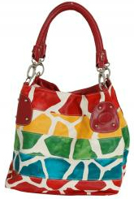
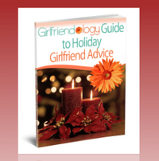
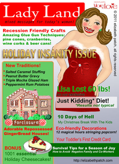

Four Tips for Lifelong Friendships | Girlfriend Advice from Holly Miller
Sun, 27 Nov 2011 17:14:06 +0000
Sometimes we get so busy at this time of year that we forget to take care of ourselves – much less our friendships.
Guest blogger Holly Miller shares great tips for taking time and fostering those all important girlfriends we cherish.
Whether you met your best friend in high school as a teen or at college [...]
GIRLFRIENDOLOGY - the online community of women based on inspiration, appreciation & celebration of female friendship
Join us also on Facebook and Twitter
THANKS GIRLFRIEND!
Sometimes we get so busy at this time of year that we forget to take care of ourselves – much less our friendships.
Guest blogger Holly Miller shares great tips for taking time and fostering those all important girlfriends we cherish.
Whether you met your best friend in high school as a teen or at college as an adult, we know that female friends play a vital role in our quality of life. The bonds that develop within these sisterhoods not only provide us with strength and support, but also provide lasting allies for a lifetime. Like any relationship, your bond with your best girlfriend must be nurtured in order for it to grow and remain strong over the years.
If you are looking for ways to improve your relationship with your female friends or if you are looking for tips on how to show your best friend you still care, here are some tips for how to create and maintain lasting friendships with your female friends.
Be A Good Listener
After a difficult day at the office or after a particularly grueling break-up with a long-time beau, most women take comfort in knowing they can call up their best friend to rant and rave about the troubles of life. Many of us know that we can turn to our girlfriends to vent and release some steam in order to get back to our regular pleasant selves. But while most of us take comfort in this fact, it is important to make sure that the relationship is not one-sided. While good friends know they can share their questions and concerns, they should also make sure they place just as much emphasis on listening to their best friend’s problems as they do on venting away their own frustrations.
Be Gentle When Providing Advice
Like all good friends, we invest and involve ourselves in our friends’ lives. When our BFF has a problem, of course we want to help her fix it. But, while most of us want to help, sometimes providing advice can be a bit of a challenge. When giving advice to friends, always remember that you are not an expert (unless of course you are a therapist or professional life coach). For best results, ask your friend if she want advice before you offer it. If you choose to relay advice, always begin with a statement that lets your friend know you respect her feelings on the issue at hand. Try to offer guidance by providing a little outside perspective. Remember to always give advice with a spoon full of sugar and a good helping of honesty.
If You Break It, You Buy It
One of the best parts about having a best friend...
Read the whole entry, girlfriend! »
GIRLFRIENDOLOGY - the online community of women based on inspiration, appreciation & celebration of female friendship
Join us also on Facebook and Twitter
THANKS GIRLFRIEND!
25 Great Girlfriend Gifts under $25 | Holiday Gifts, Christmas Gifts, Hanukkah Presents
Sat, 26 Nov 2011 12:14:50 +0000
Make your Girlfriends feel as special as their friendship is to you with these 25 Holiday Gift Ideas under $25!
The holidays are the perfect time to show your girlfriends how much their friendship means to you. So, we’ve got 25+ girlfriend gift ideas for Christmas gifts, Hanukkah presents, Birthday gifts or a surprise way of [...]
GIRLFRIENDOLOGY - the online community of women based on inspiration, appreciation & celebration of female friendship
Join us also on Facebook and Twitter
THANKS GIRLFRIEND!
Make your Girlfriends feel as special as their friendship is to you with these 25 Holiday Gift Ideas under $25!
The holidays are the perfect time to show your girlfriends how much their friendship means to you. So, we’ve got 25+ girlfriend gift ideas for Christmas gifts, Hanukkah presents, Birthday gifts or a surprise way of saying ‘thanks for being my friend’ – all under $25. Show your BFF how much special she is to you with a special gift!
- MAGAZINE SUBSCRIPTIONS – A year of reminders of your friendship and your thoughtfulness. Give her the gift of something she loves like a magazine about her favorite hobby or passion – like Women’s Day for just some helpful info and inspiration ($5/year!), Women’s Health because you want her to be healthy and around in your life for a long time ($16), First for Women with 17 issues of helpful tips and coupons ($20), or something for a favorite hobby of hers – Beadwork magazine for your jewelry loving friends, Sew Beautiful for the seamstress sista ($24.99!), Women’s Running for those fitness friends ($20), and, for your gourmet girlfriends and foodie friends - Holiday Girlfriend Gift Guide – For Fashionable Friends
Pumpkin Muffins | A Thanksgiving Tradition
Thu, 24 Nov 2011 16:35:18 +0000
What are your Thanksgiving Traditions girlfriends?
Feasting with family and friends? Are you carbo-loading for Black Friday shopping? Relaxing at home (in parisian pajamas)?
Our fave friend, JUDI COGEN, shares her Thanksgiving Tradition – Pumpkin Muffins!
I have never been accused of being the world’s greatest chef. I have never actually set the house on fire, but I [...]
GIRLFRIENDOLOGY - the online community of women based on inspiration, appreciation & celebration of female friendship
Join us also on Facebook and Twitter
THANKS GIRLFRIEND!
What are your Thanksgiving Traditions girlfriends?
Feasting with family and friends? Are you carbo-loading for Black Friday shopping? Relaxing at home (in parisian pajamas)?
Our fave friend, JUDI COGEN, shares her Thanksgiving Tradition – Pumpkin Muffins!
I have never been accused of being the world’s greatest chef. I have never actually set the house on fire, but I have caused the smoke detector to go off more times than I care to admit.
There are a few recipes I manage to produce consistently and flawlessly. Some of these have turned into family traditions.
One family favorite is mini pumpkin muffins. This is a recipe my mom discovered someplace. It has the advantages of
- Being simple (even I don’t get confused)
- Having just a few ingredients (shopping is a breeze)
- Yielding zillions (which is good because everyone eats them even before they’re cool)
- Tasting fabulous (need I say more?)
Because the recipe makes so many, there are plenty to serve the family with enough left over to make little packages of Thanksgiving muffin hugs for my girlfriends. Sometimes I wrap muffins in a piece of fun fabric and tie with a ribbon. Sometimes I place them in bright paper bags to deliver them. OK, fine. Both of those happen in my Martha Stewart fantasy world. Usually, how I deliver them is far less important than the fact they are delivered.
I hope you enjoy them as much as we do!
Mini Pumpkin Muffins
1 can (30 oz) Pumpkin Pie Mix (you know, the stuff in the orange can that lines grocery store shelves this time of year)
2 packages (17 oz) Nut Bread Mix (personally, I prefer making it with Date Bread mix because I don’t like nuts in my muffins. I’ve also used pumpkin bread mix in a pinch.)
1 egg, beaten
1 Cup raisins
Mix everything together (don’t you love how simple this is? Definitely my kind of recipe.)
Put batter in greased muffin tins (you can use regular sized muffin tins but then they won’t be mini muffins. I always use mini muffin tins).
NOTE: Yes, the muffin tins really need to be greased. Not just before you start baking but before you refill the tins. And yes, they still need to be greased if you use the silicon type.
Sprinkle with cinnamon sugar (use a heavy hand).
Bake at 400° for 8 to 12 to 20 minutes depending on the size of the muffins you’re making and the cooperative nature of your oven.
Remove from muffin tins (I generally use a spoon to help ‘scoop’ them out if they are sticking).
Read the whole entry, girlfriend! »
GIRLFRIENDOLOGY - the online community of women based on inspiration, appreciation & celebration of female friendship
Join us also on Facebook and Twitter
THANKS GIRLFRIEND!
Holiday Girlfriend Gift Guide – For Fashionable Friends
Wed, 23 Nov 2011 20:36:03 +0000
For your Style Guru … Girlfriend Gifts for the Holidays for your Fashionable, Fabulous Friends!
And check out our other Holiday Girlfriend Gift Guides – for Foodies, Animal Lovers, Jewelry Girls and more Girlfriend Gifts!
ISLAND TREASURE NECKLACE – (in photo to the right) Created by Sylca Designs, this Island Treasure Necklace with Mother of Pearl is [...]
GIRLFRIENDOLOGY - the online community of women based on inspiration, appreciation & celebration of female friendship
Join us also on Facebook and Twitter
THANKS GIRLFRIEND!
 For your Style Guru … Girlfriend Gifts for the Holidays for your Fashionable, Fabulous Friends!
For your Style Guru … Girlfriend Gifts for the Holidays for your Fashionable, Fabulous Friends!
And check out our other Holiday Girlfriend Gift Guides – for Foodies, Animal Lovers, Jewelry Girls and more Girlfriend Gifts!
ISLAND TREASURE NECKLACE – (in photo to the right) Created by Sylca Designs, this Island Treasure Necklace with Mother of Pearl is made with irregular resin shapes with mother of pearl and coconut fibers inside. (Sylca Designs focuses on creating contemporary fashion accessories made with natural renewable materials.)
COLORFUL GIRAFFE HANDBAG -For the fashionable friend for whom animal prints are just too tame, let her show her colorful style with this fab bag. Made of high quality synthetic leather. Zips closed for maximum security. Silver-toned hardware. Tote includes one zip pocket on the inside wall and another two open multi-purpose pockets on the opposite inside wall. (& Don’t forget the Purse Perfector below!)
PARISIAN PINK PAJAMAS – If she’s even fashionable in her sleep, she’s sure to love these flannel lounge-wear PJ’s. Decorated with pink Parisian Toile / Eiffel Towers. Frankie & Johnny bSoft Flannel are made of 70% Bamboo Rayon and 30% Cotton. Button up with two front pockets, perfect for lounging and an elastic drawstring waistband on pant. The texture of bamboo is comparable to a blend of cashmere and silk.
Holiday Season of Supportive Women | Girlfriend Advice from Selina Murray
Giving Big on a Small Budget | Holiday Advice from Girlfriend Guru Donina Ifurung
Wed, 23 Nov 2011 12:53:21 +0000
Girlfriend advice on saving money and getting more meaning out of this holiday season.
We’re thankful for the generous sharing of women’s wisdom here on Girlfriendology. (Like in our NEW FREE eBook: Girlfriendology Guide to Holiday Girlfriend Advice.) Today, Girlfriend Guru DONINA IFURUNG shares her girlfriend advice on spending less money this holiday without sacrificing on [...]
GIRLFRIENDOLOGY - the online community of women based on inspiration, appreciation & celebration of female friendship
Join us also on Facebook and Twitter
THANKS GIRLFRIEND!
 Girlfriend advice on saving money and getting more meaning out of this holiday season.
Girlfriend advice on saving money and getting more meaning out of this holiday season.
We’re thankful for the generous sharing of women’s wisdom here on Girlfriendology. (Like in our NEW FREE eBook: Girlfriendology Guide to Holiday Girlfriend Advice.) Today, Girlfriend Guru DONINA IFURUNG shares her girlfriend advice on spending less money this holiday without sacrificing on the reason for the season:
The holidays are my favorite time of year. There is a certain childlike excitement that comes over me when I know that Christmas is upon us. However, the economy has caused some people to cut back on holiday spending. The specialness of the season should not be overlooked just because households are on a budget. As someone who has personally experienced the crisis in our American economy, I have found ways to still be joyful and to still give big during the holidays without spending too much money.
1. Get creative. This is a great excuse to put your creativity into full force. Use your top gift to craft something wonderful. If you’re a crafter, make a wreath or ornaments. Create a custom journal or recipe book. Move over Chef Gordon Ramsey! Put together some of your favorite dishes in a cookbook or beautifully decorated note cards. Or if you are feeling like Martha Stewart, make a delicious gourmet meal for your girlfriends and make it a girls’ night in. Got the spirit of songwriter? Pen a song or poem dedicated to a special person, and frame it. Better yet, record it on YouTube and let them feel loved and special throughout the year.
2. Be a budget diva with coupons and Groupons. Do you remember making your own coupons for a hug or a kiss for a significant other? Those still work! Be crafty and use construction paper, markers, serrated scissors, and stencils. More on the techie side? Use Publisher to find templates and clip art to create professional-looking coupons to pass onto family members. Use your imagination and make coupons for things like “A morning stroll and a frappuccino at Starbucks,” “Free movie pass and small popcorn,” “Let’s get a manicure together!”—the possibilities are endless. Sign up for Groupon, Living Social and Bloomspot to find out about...
Read the whole entry, girlfriend! »
GIRLFRIENDOLOGY - the online community of women based on inspiration, appreciation & celebration of female friendship
Join us also on Facebook and Twitter
THANKS GIRLFRIEND!
Black Friday Shopping Tips | Girlfriendology Guide to Holiday Girlfriend Advice
Tue, 22 Nov 2011 13:00:30 +0000
Happy Thanksgiving Girlfriends! Are you going shopping on ‘Black Friday?’
My girlfriend Kleta and her sister have a tradition of going out the day after Thanksgiving with the motto of ‘Shop ’til you Drop.’ Do YOU go out on Black Friday?
If you’re hitting the stores and sales this holiday weekend, here’s some great girlfriend advice on [...]
GIRLFRIENDOLOGY - the online community of women based on inspiration, appreciation & celebration of female friendship
Join us also on Facebook and Twitter
THANKS GIRLFRIEND!
Happy Thanksgiving Girlfriends! Are you going shopping on ‘Black Friday?’
My girlfriend Kleta and her sister have a tradition of going out the day after Thanksgiving with the motto of ‘Shop ’til you Drop.’ Do YOU go out on Black Friday?
If you’re hitting the stores and sales this holiday weekend, here’s some great girlfriend advice on shopping on Black Friday buy the Consumer Queen herself, MELISSA GARCIA. She shared the following girlfriend shopping advice in our NEW and FREE eBook – The Girlfriendology Guide to Holiday Girlfriend Advice. (Also included, recipes, tips on how to have a sane holiday and more frugal advice for this spendy time of year.)
Girlfriend Advice for Black Friday
- Wear Comfortable Clothes and shoes. Dress in layers you may want to peel down while shopping. Ladies this is the one day out of the year that you do not need to dress to impress!!!
- Make your list ahead of time , prioritize and get organized.
- Don’t forget to print any coupons that can be used and attach them to the store flyers you are shopping. Check your coupon policy before going to the store as stores may change their policies for special days like Black Friday
- Bring Bottled Water and Snacks.
- Ladies bring a hair tie, just wear a rubber-band or scrunchie around your wrist to pull your hair up when you get hot from standing in a crowd.
- Walkie Talkies are great to have. I have used these in the past and they are great to have. Faster than using your cell phone. Plus sometimes cell phone reception is not reliable.
- Shop with FRIENDS. (Our favorite way to shop!) Use the buddy system so you can tag team and get the deals you need.
- Don’t forget to price match your ads. You will definitely save on time and gas. Walmart is a great place to take all of your ads to. If your shopping Walmart don’t forget those coupons that will give you overage to put towards those already low Black Friday prices to save even more.
- Go to the store a day early and scout out where your items will be placed in the store. More often in not stores like Walmart will place items in unusual spots in the store to help with lines and keep everyone organized. One year the TV I wanted was in health and beauty.
- Wear contacts instead of glasses.No need them falling off and breaking.
- Don’t forget your...
Read the whole entry, girlfriend! »
GIRLFRIENDOLOGY - the online community of women based on inspiration, appreciation & celebration of female friendship
Join us also on Facebook and Twitter
THANKS GIRLFRIEND!
Holiday Party Lingerie | Tips from Girlfriend Guru, Miss Kitty Plum
Mon, 21 Nov 2011 13:04:39 +0000
It’s Holiday Party Season and we’ve got the Girlfriend Advice to Have you looking and feeling FABULOUS!
Don’t stress over the dress! Thankfully we’ve got our fab Girlfriend Guru MISS KITTY PLUM to share her expertise in making sure we look and feel fabulous in our holiday party dresses:
Party season has well and truly arrived. Whether [...]
GIRLFRIENDOLOGY - the online community of women based on inspiration, appreciation & celebration of female friendship
Join us also on Facebook and Twitter
THANKS GIRLFRIEND!
 It’s Holiday Party Season and we’ve got the Girlfriend Advice to Have you looking and feeling FABULOUS!
It’s Holiday Party Season and we’ve got the Girlfriend Advice to Have you looking and feeling FABULOUS!
Don’t stress over the dress! Thankfully we’ve got our fab Girlfriend Guru MISS KITTY PLUM to share her expertise in making sure we look and feel fabulous in our holiday party dresses:
Party season has well and truly arrived. Whether your style is sleek and sophisticated, flirty and fun, or anything with a bit of sparkle, a proper fitting bra can make all the difference to your outfit. When you are out shopping don’t buy a dress without thinking of your lingerie. The 20-something sales assistant, with gravity defying boobs, probably has no idea the sort of scaffolding and foundation garments it will take to have your bosom up front and secure. That dress with the deep front plunge and scooped back may look amazing but please don’t listen to her insistence that you can just buy a backless, frontless stick on bra that will do the trick! There are indeed such items available but if you are above a C cup the weight of the breast is going to spend the whole evening making a break for it, and if you are unlucky it may just succeed. The last thing you want is for your office party to be memorable because of your wardrobe malfunction. Here are my tips for picking the right bra for under the right dress.
Strapless Dress – If you have a dress that is strapless, the most popular option is a strapless bra. Usually they come with detachable straps that make them more versatile. As you are getting no extra support from the straps the bras are a full cup and I recommend looking for bras that have a perform cup as it will give you a better silhouette.
Personally I prefer to wear a strapless basque/bustier which has underwire cups and boning down the body. This makes the piece very secure so you will have no worries about it slipping; it also gives you a smooth line down the torso. If your dress is very slinky in a fine fabric this may not be suitable as the boning may show through.
Halter-neck Dress – Often halter-neck dresses have a plunge at the front making a strapless bra an unsuitable choice. The solution is finding a plunge bra that can be converted (check for removable straps). These bras either come with a halter-neck strap or you can buy them separately. To make sure your bra strap sits underneath the dress you can sew a small loop of ribbon at the neck and thread the bra strap through it.
The...
Read the whole entry, girlfriend! »
GIRLFRIENDOLOGY - the online community of women based on inspiration, appreciation & celebration of female friendship
Join us also on Facebook and Twitter
THANKS GIRLFRIEND!
Understanding Food Cravings | Girlfriend Advice from Treena Wynes
Sun, 20 Nov 2011 19:32:07 +0000
Food Cravings, Emotional Eating, using Food to deal with stress … they’re something we talk about with our friends (because we can be totally open and with our friends).
We all know what it’s like to have food positively screaming at us, right girlfriend? Somehow, especially at this time of year, we end up eating more [...]
GIRLFRIENDOLOGY - the online community of women based on inspiration, appreciation & celebration of female friendship
Join us also on Facebook and Twitter
THANKS GIRLFRIEND!
Food Cravings, Emotional Eating, using Food to deal with stress … they’re something we talk about with our friends (because we can be totally open and with our friends).
We all know what it’s like to have food positively screaming at us, right girlfriend? Somehow, especially at this time of year, we end up eating more than we’d planned and more than we want.
Girlfriend guest blogger TREENA WYNES explains how the food craving cycle works and why we find ourselves having just consumed all the brownies on the plate.
Did you know we use foods to stimulate or self-medicate ourselves? The foods we choose to perk us up, comfort our anxieties, and relax our tensions actually exacerbate the stress we are feeling. After an emotionally-taxing day we tend to reach for sugar or refined carbs to improve our moods. With our hormones continually adapting to all the events we encounter or the tasks demanded on us, the hormonal imbalance at the end of the day often leads us to the package of cookies in our cupboard as soon as we walk in the door. “The psychological experience is as much involved as the biological experience” – (Why Women Need Chocolate, Debra Waterhouse, MPH, RD, 1995).
Sugar boosts the good-mood hormone, serotonin. Serotonin is the hormone that provides us with the feeling of joy, satisfaction, and confidence. When our serotonin levels are low, our brain does what it can to bring serotonin levels back to normal by sending out messages that we call cravings. The combination of fat and sugar is most desirable to women as fat lifts our endorphine level which is a pain-relieving hormone that is as powerful as morphine. The majority of women report during their “monthly time” is when cravings are more intense. We are unable to resist the strong messages from the brain as it trying to keep hormones at their appropriate levels. Therefore, as good-mood hormones dip, we are left with uncontrollable sugar and fat cravings that are nearly impossible to resist.
The key to ensuring good-mood hormone levels is to maintain stable blood sugar levels. If the brain is supplied with maximum energy throughout the day with “healthy” carbohydrates, proteins, and good fats it will provide us with alertness, creative thinking, and stable moods. Our resiliency to life’s demands depends on eating healthy meals that will sustain us. If our blood sugar levels drop and we “starve” the brain, it will protest with headaches,...
Read the whole entry, girlfriend! »
GIRLFRIENDOLOGY - the online community of women based on inspiration, appreciation & celebration of female friendship
Join us also on Facebook and Twitter
THANKS GIRLFRIEND!
Creating a Girls Night Out | Making Time for You by Jennifer Hall
Sat, 19 Nov 2011 18:56:03 +0000
Hey Girlfriend – When was your last Girl’s Night Out / GNO?
Okay Girlfriend – be honest? How long as it been?
It’s so easy to lose track of time and find ourselves suddenly months away from spending time with our friends. (And, remember that time with our friends reduces our stress levels – something that impacts [...]
GIRLFRIENDOLOGY - the online community of women based on inspiration, appreciation & celebration of female friendship
Join us also on Facebook and Twitter
THANKS GIRLFRIEND!
 Hey Girlfriend – When was your last Girl’s Night Out / GNO?
Hey Girlfriend – When was your last Girl’s Night Out / GNO?
Okay Girlfriend – be honest? How long as it been?
It’s so easy to lose track of time and find ourselves suddenly months away from spending time with our friends. (And, remember that time with our friends reduces our stress levels – something that impacts our health and all of our relationships.) Thankfully we’ve got Girlfriend Guru JENNIFER HALL to remind us of the simple joy of a good Girl’s Night Out!
How You Know When You Need a Good GNO
- It’s been months since you had a good, full-bodied belly laugh that caused tears to stream down and your face hurt.
- You’ve nearly got a hole in your tongue from biting it so hard, unable to vent out your frustrations.
- You’re sure the last time you spent time with your girlfriends was just maybe a month ago, but in reality it’s been MONTHS – plural.
- You can’t remember the last time you had something truly sinful to eat (such as a mud pie dessert or movie theater popcorn with extra butter).
- Every single thing your husband and children do gets under your skin.
- You frequently find yourself wishing you could run screaming from your house, never to return!
Yep. All classic signs that you not only need a Girl’s Night Out, but you need it STAT!
Your mission, should you choose to accept it, is to make it happen.
It doesn’t matter who was the last of you to organize a GNO. It doesn’t matter if not everyone can make it.
Where two or more are gathered….
So this is what you do. You call, text, email, Facebook or Tweet your girlfriends making it VERY CLEAR that this needs to happen. You must not be vague. You must provide a date and time that is best for you. It would also be helpful if you had some idea of what you’d like to do. Or request suggestions.
If everyone can afford it, actually GO OUT. But if money is an issue, see if one of your friends would be willing to host the Girls in her home. I say one of your friends because if you’re the one in need of the GNO, you might really resent doing it at your own home. On the other hand, just getting the girls together can be all you need, setting be damned.
Once you and your girls have decided when and what to do, put it on the calendar and tell your significant other. If the date is a few days or a week away, you will need to tell him again.
When the day of your scheduled GNO arrives, try not to stare at the...
Read the whole entry, girlfriend! »
GIRLFRIENDOLOGY - the online community of women based on inspiration, appreciation & celebration of female friendship
Join us also on Facebook and Twitter
THANKS GIRLFRIEND!
Turning Gratitude Inward | Girlfriend Advice from Cathy Wilke
Sat, 26 Nov 2011 21:02:20 +0000
There is so much to DO this time of year! It seems we are barely finished with one celebration before it’s time to prepare for the next. And then there is shopping for gifts, decorating, and…Help, Girlfriends!
Guest blogger Cathy Wilke reminds us that during the rush, rush, rush, we need to take some time [...]
GIRLFRIENDOLOGY - the online community of women based on inspiration, appreciation & celebration of female friendship
Join us also on Facebook and Twitter
THANKS GIRLFRIEND!
There is so much to DO this time of year! It seems we are barely finished with one celebration before it’s time to prepare for the next. And then there is shopping for gifts, decorating, and…Help, Girlfriends!
Guest blogger Cathy Wilke reminds us that during the rush, rush, rush, we need to take some time to show ourselves some gratitude. And we need to help our wonderful girlfriends, the ones we just could not live without, slow down and show themselves some kindness too.
Hey Girlfriends, move in a little closer. No, closer. Yes, that’s good. I have a little something I want to share with you this Thanksgiving. Part of what you’ll do on Thursday is take some time to be grateful for all you have. But I’d like you to add something to that juicy gratitude practice of yours, I’d like you to give a little love in the other direction. In the “you” direction.
You’re always ready to help a girlfriend out when she’s down, ready to tell her how great she is, what she’s really made of and rattle off a list of everything she brings to the party. What about doing the same for yourself on a regular basis? Throwing a little love your way for all that you do, for all that you are.
We’re all working our butts off to be better people, spouses, parents, partners—to have success in whatever we’re pursuing, to leave our mark in whatever small way we can.
Some of us are on an eternal quest for self improvement.
But we get caught up in the doing and forget about the being. Because we’re always in pursuit, we never actually arrive.
There’s got to be an exhale.
- Signed on three more clients. Check
- Got promoted at work. Check.
- Helped my girlfriend get through a really bad time. Check.
- Took a loved one to the doctor even though I had a million things on my list that day. Check.
- Made the deadline. Check.
I’ve seen myself do this again and again. Big things that I’ve worked on for months—maybe years—just checked off like a minor item on a to-do list. And then I’m on to the next task—no congratulations, no victory party…
Always chasing the carrot, instead of relishing the one I have in my possession.
Don’t Be Afraid to Own It
When you do good things for others and accomplish your goals but don’t ever let yourself own those things—you’re starving yourself...
Read the whole entry, girlfriend! »
GIRLFRIENDOLOGY - the online community of women based on inspiration, appreciation & celebration of female friendship
Join us also on Facebook and Twitter
THANKS GIRLFRIEND!
The Faux Diet Queen Talks Turkey on Recovering from Thanksgiving
Fri, 25 Nov 2011 13:41:35 +0000
Hope you had a wonderful Thanksgiving, Girlfriend! We had a lovely, relaxing day being thankful for great food, wonderful family and friends, and thinking of all the good in our lives.
The Faux Diet Queen (or as we affectionately call her, FDQ) has agreed to share her latest (and last) weight loss journey with [...]
GIRLFRIENDOLOGY - the online community of women based on inspiration, appreciation & celebration of female friendship
Join us also on Facebook and Twitter
THANKS GIRLFRIEND!
 Hope you had a wonderful Thanksgiving, Girlfriend! We had a lovely, relaxing day being thankful for great food, wonderful family and friends, and thinking of all the good in our lives.
Hope you had a wonderful Thanksgiving, Girlfriend! We had a lovely, relaxing day being thankful for great food, wonderful family and friends, and thinking of all the good in our lives.
The Faux Diet Queen (or as we affectionately call her, FDQ) has agreed to share her latest (and last) weight loss journey with us as a regular feature at Girlfriendology. We hope you’ll join us to cheer her on, nudge her back on track when she strays, and generally giggle along. Like many of us, the hilarious Faux Diet Queen spent yesterday gorging on traditional food–and now she is thinking about the consequences.
I don’t know about you, but I did not spend yesterday demurely nibbling on baby lettuce leaves.
Nope. Like many Americans, I spent the day in complete Thanksgiving Tradition: that is, overindulging in every possible way.
Following a light, calorie conscious breakfast of 17 Cinnabon rolls and the Macy’s Thanksgiving Day Parade, the serious indulging began.
They say that the average person gains between seven and eight pounds during the holidays. I have one word for those people: amateurs. I’m pretty sure I gained that much yesterday during one commercial.
Here are my tips for getting rid of the Thanksgiving weight gain.
Sleep. Sure, you don’t really burn many calories sleeping, but 1. You can’t eat while you’re asleep (even I haven’t figured out how to do that) and 2. You don’t have to look at yourself in the mirror and face reality while you’re asleep.
Go Shopping. Shopping, when done correctly—especially the day after Thanksgiving—is most absolutely an aerobic sport.
Indulge in Something Superfluous. Take a few moments to get new shoes, a new hair-do. Even a new lipstick can work wonders for appetite control. Note: new food items like interesting cheese, indulgent wines, and inspirational desserts are not superfluous; they are necessities and don’t fall into this category.
Clean the House. (Even as I write that I am laughing so hard I am snorting Diet Coke out my nose.) If you are motivated to clean, you should feel doubly proud of the calories you’re burning. And please be sure to let me know what a clean house looks like.
But in the end, my best advice is: Get Over It. It’s Thanksgiving. It’s Tradition. It’s food, national pride, family, football, and a day off all rolled into one. So what if the price is a bit of extra flab? There’s plenty of time to get rid of it—after we finish all the...
Read the whole entry, girlfriend! »
GIRLFRIENDOLOGY - the online community of women based on inspiration, appreciation & celebration of female friendship
Join us also on Facebook and Twitter
THANKS GIRLFRIEND!
Thankful for my Friends | Keeping the Attitude of Gratitude
Thu, 24 Nov 2011 15:19:19 +0000
I get asked a lot why I started Girlfriendology. I think most women find the topic of female friendship such a given or, on the other end of the spectrum, most men have never considered the relationships between women to be of any interest. And sometimes, women and men, just get it. Whatever response, I [...]
GIRLFRIENDOLOGY - the online community of women based on inspiration, appreciation & celebration of female friendship
Join us also on Facebook and Twitter
THANKS GIRLFRIEND!
I get asked a lot why I started Girlfriendology. I think most women find the topic of female friendship such a given or, on the other end of the spectrum, most men have never considered the relationships between women to be of any interest. And sometimes, women and men, just get it. Whatever response, I don’t mind.
I tell them how in 2005, two of my good girlfriends were dealing with cancer. How I struggled for how to be a good friend to them and how it made me consciously crave being around my female friends, both the ones dealing with cancer and the rest of my friends.
I tell them how I then did some research on the relationship of female friendship and found proof that girlfriends make us healthier, happier, less stressed, live longer and feel more beautiful. (Lots of great info in The Tending Instinct, by Shelley E Taylor and the ‘feel more beautiful’ benefit from a study by Dove skincare.) If they’re women, I remind them how being with their friends reduces, and often even removes, stress.
On this special day of giving Thanks, I’m so thankful for the gift of female friendship. I’m blessed with girlfriends who are there for me, who care about me and who love me even when I’m far from being the perfect friends. I’m grateful for the women and their friendships who have inspired me everyday on Girlfriendology. I’m honored to have had wonderful women along the way who have helped me making Girlfriendology an amazing community of women – including our ‘Chief of Insanely Brilliant Ideas’ the fabulous, fun and smart JUDI COGEN. (Thanks for ALL YOU DO!)
On this day of giving thanks, I want to keep this ‘attitude of gratitude’ going. I want to be thankful for my friends on a daily basis. I want to recognize the blessings of amazing people in my life on an on-going basis. I want to keep the feeling of thankfulness going all year.
Thanks for the gift of your friendship, for being a friend to your friends, for inspiring others in your life.
Happy Thanksgiving Girlfriends! Thanks for being you!
Debba
More on Thanksgiving:
- Nine more things I’m Thankful for
- Girlfriend Advice on Black Friday shopping
- Thanksgiving letter to my girlfriends
Read the whole entry, girlfriend! »
GIRLFRIENDOLOGY - the online community of women based on inspiration, appreciation & celebration of female friendship
Join us also on Facebook and Twitter
THANKS GIRLFRIEND!
Family Vacations Twitter Party with Traveling Moms #TMom
Wed, 23 Nov 2011 15:10:17 +0000
I guess we can’t ALWAYS travel with our girlfriends We’re talking Family Vacations next MONDAY on a Twitter Party with Traveling Moms.
Girlfriends share things … recipes, secrets, shopping stories and lots of girlfriend advice. Next week we’re sharing family vacation advice with some great girlfriends on a Twitter Party with Traveling Moms and [...]
GIRLFRIENDOLOGY - the online community of women based on inspiration, appreciation & celebration of female friendship
Join us also on Facebook and Twitter
THANKS GIRLFRIEND!
I guess we can’t ALWAYS travel with our girlfriends  We’re talking Family Vacations next MONDAY on a Twitter Party with Traveling Moms.
We’re talking Family Vacations next MONDAY on a Twitter Party with Traveling Moms.
Girlfriends share things … recipes, secrets, shopping stories and lots of girlfriend advice. Next week we’re sharing family vacation advice with some great girlfriends on a Twitter Party with Traveling Moms and friends. (What’s a Twitter Party? Follow #TMOM on Twitter next week to join us as we tweet great vacation stories and girlfriend advice – Monday, November 28th, 9-10pm ET.)
Enter (info below) to win an iPad2 and a HUGE prize (to be announced on Monday!).
Party Details:
WHEN: Nov. 28, 9-10 pm ET (8-9 pm CT; 7-8 pm MT; 6-7 pm PT)
WHO: Panelists @Girlfriendology @KimOrlando @CindyRichards @dadarocks @MaryHeston @savvymommy
WHAT: Twitter party – Great Vacations that deserve a do-over
HOW TO JOIN: Follow the hashtags #TMOM #DoubleTake
PRIZES
RSVP for the party below and have at least one tweet on the party to be entered to win an iPad 2 (it’s the one you covet). And a HUGE prize to be announced on Monday.
As always, there are several ways to enter and you can enter more than once.
* Holiday Travel Double Take Giveaway from Venture prize limited to $5,000
REQUIRED
1. RSVP for the party here by leaving your Twitter handle. (If you aren’t on Twitter, it’s easy—and free—to sign up. Go to www.twitter.com to see how.)
2. Tweet at least once the party using the hashtags #TMOM #DoubleTake.
More options for participating, see TravelingMom.com.
Prizes and details subject to change and subject to availability. All winners will be chosen using random.org. Restrictions may apply. You will have 48 hours to respond and claim your prize. Winners please DM your address to @TravelingMoms and allow 3-4 weeks for delivery.
Please! Read all the legal fine print here.
NOTE: Girlfriendology is being compensated for participating in this Twitter party by TravelingMom.com. As always on Girlfriendology, we only share things we’d honestly share with our girlfriends.
GIRLFRIENDOLOGY - the online community of women based on inspiration, appreciation & celebration of female friendship
Join us also on Facebook and Twitter
THANKS GIRLFRIEND!
Holiday Craziness | Body Image Advice from Guru Elizabeth Patch
Tue, 22 Nov 2011 13:43:06 +0000
More than any other time of year, we seem to find the holidays very stressful – especially when it comes to how we look.
Meet Elizabeth Patch, our Girlfriend Guru of Body Image. Elizabeth reminds us that we must take time to take care of ourselves during this busy time of year. Thanks Elizabeth for sharing [...]
GIRLFRIENDOLOGY - the online community of women based on inspiration, appreciation & celebration of female friendship
Join us also on Facebook and Twitter
THANKS GIRLFRIEND!
 More than any other time of year, we seem to find the holidays very stressful – especially when it comes to how we look.
More than any other time of year, we seem to find the holidays very stressful – especially when it comes to how we look.
Meet Elizabeth Patch, our Girlfriend Guru of Body Image. Elizabeth reminds us that we must take time to take care of ourselves during this busy time of year. Thanks Elizabeth for sharing …
The winter holidays…
so full of warm memories, nostalgic traditions, traditional food.
But those memories, traditions, and food don’t appear by magic.
It’s time for women to go into full swing multi-tasking craziness!
Find time to lovingly hand-craft gifts for your friends and family!
Tastefully decorate your home and yard,
write heartfelt notes to enclose with cards,
volunteer your time to help the less fortunate.
Figure out what to do with the kids during their Christmas break from school.
Try to stay within a budget that never seems big enough.
Bake tons of ooey, gooey, buttery, sugary desserts and holiday treats
(but still try to lose weight so you can look hot in a party dress!)
Sometimes, girlfriends, the best thing you can do when snowed under is laugh!
PS: This festive season can also trigger lots of body image and disordered eating issues*.
Remember, it is more important to take care of yourself first, than to create the perfect holiday experience for everyone else.
And if it becomes overwhelming, please, please, please find someone who can help!
Smiles!
ELIZABETH PATCH’s story is simple and touching:
a high school art teacher who struggled with eating disorders, she watched in vain as a favorite student died from anorexia.
Her sketchbook journals evolved into “More to Love,” an illustrated book about body image and self-esteem. Elizabeth believes that loving one’s body, no matter what size or shape, encourages positive choices for a healthier, happier life!
“Women should be measured by the lives we lead, not by the size we wear!”
Elizabeth Patch is the author and illustrator of More to Love. Her inspirational writing style and adorable illustrations take a light-hearted look at the serious issues of body image and self-esteem for women of all sizes.
What are your thoughts on body image? Do the Holidays impact your feelings of acceptance and self-love?...
Read the whole entry, girlfriend! »
GIRLFRIENDOLOGY - the online community of women based on inspiration, appreciation & celebration of female friendship
Join us also on Facebook and Twitter
THANKS GIRLFRIEND!
9 More Things to be Thankful For | #GirlfriendGratitude
Mon, 21 Nov 2011 23:36:51 +0000
Counting our Blessings … Thanksgiving, Girlfriends and so much more … Happy Thanksgiving Girlfriends!
TOP on the list of things for which to be thankful (bonus points for grammatically correct content!) – you guessed it, GIRLFRIENDS! The amazing women in our lives who bless us with their friendships, their faith in us, how they’re our ‘family,’ [...]
GIRLFRIENDOLOGY - the online community of women based on inspiration, appreciation & celebration of female friendship
Join us also on Facebook and Twitter
THANKS GIRLFRIEND!
Counting our Blessings … Thanksgiving, Girlfriends and so much more … Happy Thanksgiving Girlfriends!
TOP on the list of things for which to be thankful (bonus points for grammatically correct content!) – you guessed it, GIRLFRIENDS! The amazing women in our lives who bless us with their friendships, their faith in us, how they’re our ‘family,’ and how we ‘do life’ together through good times and bad, happy and sad, fearful or mad. But you already knew that would top our pre-Thanksgiving list, didn’t you?
OK, we’ve got 9 MORE things to be thankful for … (feel free to join along in sharing your list of blessings on Facebook.com/Girlfriendology).
1. WOMEN’S WISDOM – What if all women were our girlfriends? Think about how that would change the history books! We’d celebrate each others successes, wouldn’t invade each others countries, would be more compassionate and supportive. As we work on that here at Girlfriendology, we can start by women sharing their wisdom with each other. It’s awesome to have women freely share their ‘girlfriend advice’ with others – FREEly (like in our NEW FREE eBook, ‘The Girlfriendology Guide to Holiday Girlfriend Advice,’ filled with frugal recommendations, recipes, tips on how to make the holidays more meaningful and much, much more – check it out!).
2. GIRLFRIEND GURU’S – It would be pretty un-girlfriendly not to have other women’s insights and input, so we’re giddy for our Girlfriend Guru’s. They’re bloggers, moms, business leaders and just amazing women who share their girlfriend advice every month on Girlfriendology. This week’s featured Girlfriend Guru’s: Miss Kitty Plum shares her lingerie expertise on getting us dressed for Holiday Parties, Just Jennifer shared why we NEED to get out for a GNO, the Faux Diet Queen opened up her ‘Food Baggage’ for us, Jessica Drummond shared how a ‘perfectly-timed high-five’ from a friend is a great thing, and Realtor
Read the whole entry, girlfriend! »
GIRLFRIENDOLOGY - the online community of women based on inspiration, appreciation & celebration of female friendship
Join us also on Facebook and Twitter
THANKS GIRLFRIEND!
Holiday Girlfriend Advice eBook – Free, Friendly Tips to make your Holidays Less Stress
Mon, 21 Nov 2011 11:51:55 +0000
Feeling that holiday stress? Wish you had some secrets to help you through it? … Could we interest you in some great girlfriend advice on the holidays – for FREE?!
HI! Debba here from Girlfriendology.com. Happy Holidays my Friends!
The stores are filled with shoppers and sales (hopefully!), the parking lots are packed with busy passengers hoping [...]
GIRLFRIENDOLOGY - the online community of women based on inspiration, appreciation & celebration of female friendship
Join us also on Facebook and Twitter
THANKS GIRLFRIEND!
Feeling that holiday stress? Wish you had some secrets to help you through it? … Could we interest you in some great girlfriend advice on the holidays – for FREE?!
HI! Debba here from Girlfriendology.com. Happy Holidays my Friends!
The stores are filled with shoppers and sales (hopefully!), the parking lots are packed with busy passengers hoping to get their errands done in time and holiday celebrations for friends and family fill everyone’s schedule. Yes! It’s officially the hectic holidays and we’re here to help!
Every year we all struggle with the same things – expectations of ourselves and of others, To Do lists to rival Santa’s naughty and nice list, and feelings that we have to make everything PERFECT for everyone. That’s a lot of pressure we place on ourselves and often it can take the spirit of the holidays out of this season of celebration and giving.
So, what do we girls do when we need advice on how to make things better, faster, cheaper, easier? We look to our girlfriends!
Just to see what would happen, we sent out a couple emails and posted a blog that asked our girlfriends to share their BEST Holiday Advice. We got a wonderful response and were able to fill the following pages with the wisdom of women from across North America about everything from gifts to recipes, spending time with your friends to great movies to watch during the holidays, and two bonuses: gift tags and frugal tips.
And, by the way … If you’re new to Girlfriendology, WELCOME to an awesome community of women! Girlfriendology is the online community for women based on female friendship. We believe in the power of women when we support each other and believe that we can make the world a better place one friendship at a time!
Check out Girlfriendology.com for great insights from amazing women as well as inspiration on the wonderful relationship between women friend – including the benefits of female friendship (makes you healthier, happier, less stressed, live longer and feel more beautiful!). Sign up for our weekly newsletter to stay in touch with the great women in this community. Hang out with us on Facebook.com/Girlfriendology and follow us on Twitter.com/Girlfriendology.
Thanks girlfriend for being here and for sharing your women’s wisdom with your friends and family. And, PLEASE, feel free to forward this blog (and the free ebook below) along to other women. We’re all about sharing girlfriend advice with...
Read the whole entry, girlfriend! »
GIRLFRIENDOLOGY - the online community of women based on inspiration, appreciation & celebration of female friendship
Join us also on Facebook and Twitter
THANKS GIRLFRIEND!
Girlfriendology Guide to Holiday Girlfriend Advice | Free eBook
Sat, 19 Nov 2011 19:35:55 +0000
Feeling that holiday stress? Wish you had some secrets to help you through it? … Could we interest you in some great girlfriend advice on the holidays – for FREE?!
The hectic holidays are here and it’s a time where some girlfriend advice just might help ease the pressure and lower the stress that comes [...]
GIRLFRIENDOLOGY - the online community of women based on inspiration, appreciation & celebration of female friendship
Join us also on Facebook and Twitter
THANKS GIRLFRIEND!
Feeling that holiday stress? Wish you had some secrets to help you through it? … Could we interest you in some great girlfriend advice on the holidays – for FREE?!
The hectic holidays are here and it’s a time where some girlfriend advice just might help ease the pressure and lower the stress that comes with too much to do and too many expectations. Luckily … we have our girlfriends!
We’re thrilled to share the ‘Girlfriendology Guide to Holiday Girlfriend Advice‘ – 80 pages filled with the amazing advice that only girlfriends can share – including ideas and advice for girlfriend get-togethers, holiday gifts, recipes, traditions and even frugal tips. Do you really want to get through the Holidays without your girlfriends? (NO!) Filled with great girlfriend advice, the Girlfriendology Guide to Holiday Girlfriend Advice FREE eBook is like having 20 friends help you get through the holidays with less stress and more smiles!
Download the FREE Girlfriendology Guide to Holiday Girlfriend Advice eBook
Here’s what you’ll find:
- How to Host a Girlfriend Gratitude Party, By Shasta Nelson, GirlfriendCircles.com
- The Faux Diet Queen Shares Holiday Ideas, By The Faux Diet Queen
- The Perfect Gift & No Stress Included!, By Janet DeVito, GirlsOnACruise.com
- Tips to getting the perfect gift … for you!, By Miss Kitty Plum, Plums Lingerie
- Must-See Holiday Romances, By Susan Mallery, Bestselling Author
- Happy Family, Happy Holidays!, By Patricia Sands, author “The Bridge Club”
- Holiday Baking Tradition , By Andi, Udandi & LunchitPunchit Blogs
- How Do You Keep Celebrating All Year Long?, By Michelle Cullum, A Renaissance Chick
- Gusto-filled, guilt-free holidays at any size!, By Stephanie Rainbow Bell, PlusSizeInnerPeace.com
- Finding Family Amongst Friends, By Robin Feltner, Supernatural Botanicals
- Spend Time with your Friends at the Holidays (& all the Time!) , By Jacqueline Cromwell, The NerdFamilyBlog
- Country Style Holiday Saving, By Sherry Martz, Citychiconafarm.com
- Practical Tips for Surviving the Holidays Without a +1, By Michelle Maskaly, The Adirondack Chick
- Seven Simple Tips for Stress-Less Gift Giving, By Sandy Fowler, Heart Filled Holidays
- 10 ways to be less stressed and have more meaningful holidays, By Bernice Wood, Living the Balanced Life
- Girlfriend Advice for Black Friday (& Holiday Shopping), By Melissa Garcia, ConsumerQueen.com
Read the whole entry, girlfriend! »
GIRLFRIENDOLOGY - the online community of women based on inspiration, appreciation & celebration of female friendship
Join us also on Facebook and Twitter
THANKS GIRLFRIEND!
Beliefs I Need to Ditch—Part I | Food Baggage from the Faux Diet Queen
Fri, 18 Nov 2011 12:05:54 +0000
What food beliefs do you have? Did you grow up with them or develop them as you got older? Our wonderful girlfriend, the Faux Diet Queen, discusses some of the crazy food beliefs she has.
The Faux Diet Queen (or as we affectionately call her, FDQ) has agreed to share her latest (and last) weight [...]
GIRLFRIENDOLOGY - the online community of women based on inspiration, appreciation & celebration of female friendship
Join us also on Facebook and Twitter
THANKS GIRLFRIEND!
What food beliefs do you have? Did you grow up with them or develop them as you got older? Our wonderful girlfriend, the Faux Diet Queen, discusses some of the crazy food beliefs she has.
The Faux Diet Queen (or as we affectionately call her, FDQ) has agreed to share her latest (and last) weight loss journey with us as a regular feature at Girlfriendology. We hope you’ll join us to cheer her on, nudge her back on track when she strays, and generally giggle along.
From the Faux Diet Queen:
Over the years I have collected enough Food Baggage to open my own luggage store. Like most baggage, Food Baggage is heavy (accounting for nearly 12% of my body weight). And like the airlines, my hips charge extra for carrying the nonsense around.
Here are five of my all time favorite Food Baggage Tips Tricks Beliefs Bits of Ridiculousness that I am trying to lose.
- Weight loss should be instantaneous. In this age of instant gratification, it seems we can have everything just as soon as we want it. If not instantly, then at least we have the option of paying for overnight shipping. It
- If you eat standing up, the calories don’t stick because they slide right off your hips. Obvious, right?
- If you break a cookie in half, you’ve broken all the calories in half. Even if you eat both pieces.
- If you eat chocolate before your period, it counts as murder prevention not as calories.
- All calories are created equal; you might as well eat chocolate.
It’s not easy to lose Food Baggage. It has a way of finding you, even if you leave it standing by itself on a crowded corner someplace.
It’s not comfortable to be without the Baggage. I’ve been carting it around for so long, it feels like a part of me.
For right now, I’m content to put aside these five. I think they are the carry-on bag of my luggage. I’m not sure they ever fit in the overhead compartment, but at this point I’m ready to leave them to their own destination.
The Faux Diet Queen is a Girlfriend and a Half, trying to find her Skinny Self. She promises to be absolutely truthful in this blog (although she may stretch a point now and then) and to share the good, the bad, and the frustrations of weight-loss.
Previous Faux Diet Queen adventures: Meet the FDQ on her journey to being fit.
Girlfriendology / Debba here: We love our girlfriends no matter what size jeans they wear or what the scales tell them if they’re brave enough to get on them. (Something I personally avoid like the...
Read the whole entry, girlfriend! »
GIRLFRIENDOLOGY - the online community of women based on inspiration, appreciation & celebration of female friendship
Join us also on Facebook and Twitter
THANKS GIRLFRIEND!